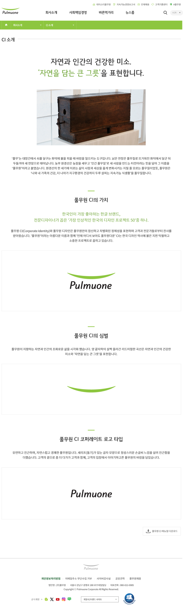

CI 소개
자연과 인간의 건강한 미소..
'자연을 담는 큰 그릇'을 표현합니다.

'풀무'는 대장간에서 쇠를 달구는 화덕에 불을 피울 때 바람을 일으키는 도구입니다. 낡은 연장은 풀무질로 뜨거워진 화덕에서 달군 뒤 두들겨야 새 연장으로 태어납니다. 늘 부침있는 농장을 세우고 '인간 풀무질'로 새 사람을 만드는 터전이라는 뜻을 담아 그 이름을 '풀무원'이라고 붙였습니다.
풀무원 CI의 가치
한국인이 가장 좋아하는 한국 브랜드
전문디자이너가 꼽은 '가장 인상적인 한국의 디자인 프로젝트 50'중 하나.
풀무원 CI(Corporate Identity)와 풀무원 디자인은 풀무원만의 참신하고 차별화된 정체성을 표현하며 고객과 전문가들로부터 찬사를 받아왔습니다. '풀무원'이라는 아름다운 이름과 함께 언제 어디서 보아도 풀무원다운 한국 디자인 역사에 빛나는 지핀 탁월하고 소중한 프로젝트로 꼽히고 있습니다.
풀무원 CI의 심벌
풀무원이 지향하는 자연과 인간의 조화로운 삶을 시각화했습니다. 양 끝자락이 살짝 올라간 리드미컬한 곡선은 자연과 인간의 건강한 미소와 '자연을 담는 큰 그릇'을 표현합니다.
풀무원 CI 코퍼레이트 로고 타입
유연하고 친근하며, 자연스럽고 경쾌한 풀무원입니다. 세리프가 있는 글자 모양으로 정성스러운 손글씨 느낌을 살려 친근함을 더했습니다. 고객의 곁으로 좀 더 다가가 고객과 함께, 고객의 입장에서 이야기하고픈 풀무원의 바람을 담았습니다.
Pulmuone